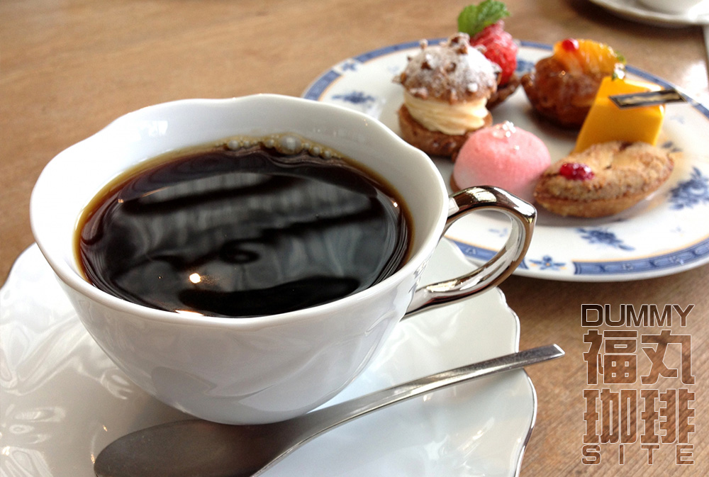

福丸珈琲店にようこそ
元町駅から山の手へ徒歩８分。
閑静な住宅街にある落ち着いたレンガ造りの建物が目印です。淹れたてのコーヒーに、四季折々の自家製ケーキと焼き菓子で、寛ぎのひと時をお楽しみください。

これはダミーサイトです。
港町・神戸のこだわりコーヒーのお店、それが福丸珈琲店です。
元町駅から山の手へ徒歩８分。
閑静な住宅街にある落ち着いたレンガ造りの建物が目印です。淹れたてのコーヒーに、四季折々の自家製ケーキと焼き菓子で、寛ぎのひと時をお楽しみください。